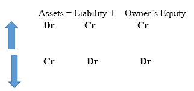

Another week that ushered in new modules for the course.
First was Introduction to Financial and Cost Accounting .
Getting to know the diffrence between finance and accounting was humbling.
Finance deal with actual cashflow and accounting mainly profit and loss.
We went through major types of business;
- Manufacturing
- Merchandise
- Service
Later through major business organisations;
- Sole proprietorship
- Partnership
- Corporation
Another talking point was
liability is a
debt.
Also having a
Business strategy which has plans and actions to gain an upperhand
over competitors. It can be a low cost or a differential one.
Knowing your value chain enables you to know where to add value to the product to benefit
the customer.
This led us to
Business stakeholders who have an interest in the economic
performance of the business. They are either internal or external. Once identified, we can
assess their information needs, design a system, record economic data and then prepare
accounting statements.
To do Business one needs ethics:
- Avoid small ethical lapses.
- Focus on long term reputation.
- Having ethics leads to personal consequences one has to endure.
There are also
Generally Accepted Accounting Principle (GAAP) based on:
- Business entity concept
- Cost concept
- Objectivity concept
- Unit of measure concept
This culminated to the accounting equation,
Assets = liabilities + owner’s equity .

Assets are,
- Longterm /fixed
- Short term / current
Liabilities
- Current/short term
- Long term/ fixed
Owner’s equity,
which is increased by,
and decreased by,
Finally the major financial reports known as
finavial statements
- cashflow
- Income/Profit or loss
- Owner’s Equity
- Balance sheet